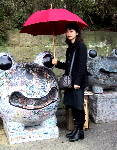
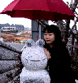

|
目指そうカエル聖地・カエル寺詣！ 【福岡発=ぴのこ福岡かえる展事務局長】行って来ました。いまやカエラーの聖地として知られる福岡県小郡市の『かえる寺』如意輪寺っていうんですが。。またまた、カエル度をパワーアップしていて、境内の後背地に広がる塀をすべて『かえるで再現する人間の一生』というレリーフの大作を作っているんです。今回紹介するのは、入り口に出現した巨大なカエルの頭部石像と、レリーフの出入り口に立つ、カエル石塔です。 全国のカエラーよ『カエル寺参り』で福運を！ 【全国かえる奉賛会】江戸時代は、お伊勢参りが爆発的ブームとなり、生涯をかけて積み立てして、一生に一度は伊勢神宮に参るのが庶民の夢だったそうだが、われわれカエラーの夢と言えば、福岡県小郡市横隈の如意輪寺に詣でることこそ、伊勢参りに匹敵する人生最大のイベントになっているのだあああああ。
旧蘭印のバリ島がカエラーの国際的聖地とすれば、凝縮された日本のカエル聖地が、如意輪寺というわけだ。いますぐ、カエルの一生のレリーフを、手でなぞり、福運を手にしてほしいぞ。カエルレリーフは写真の写りが厳しかったので誰かいった人がいたらレリーフの投稿をしてくれい！
池袋ナンジャタウンでカエルを発見！【東京発=スマイル報道員同志記者】池袋サンシャイン６０にある”ナンジャタウン”内の、住所は福袋7丁目商店街にある銭湯だよ！ここに行くとカエルに会えちゃう。中に入らなくても覗き見できちゃうよ（うっしっし・・・）覗くと・・・裸の人がいっぱい・・・ではなくて、なぜかクイズが行われてる。あれれーーー？ 皆カエルや金魚やたこに乗って初めて会う人達とクイズに参加するわけ（笑）。もちろん服は着たままです。。。クイズの内容はふ、古い！イシハラユウジロウってだれさー？え、トチジの弟だって？彼がデビューした映画なんて知ってる？？？・・・難しいなぁ。。。。 カエルに乗れるかどうかは、並んでいる順番にもかかってる。クイズに優勝すると、ステッカーがもらえちゃうよ。
【全国かえる奉賛会】ううーむ。なぞが深まるクイズである。東京に出張した折に見学にいってみよう。
JCBがカエル！キャンペーン！【福岡発=ごんざぶろう同志記者】JCBで「ALLリボに乗りカエル！キャンペーン」というのをやっています。期間は２月１６日〜５月１５日【全国かえる奉賛会】MP3プレイヤーは、いらないので、カエル携帯ストラップとカエルボールペンをもらおう！もらった人は見せびらかしに投稿してくれー。かえる新聞で紹介するぞー。
カエル雨靴の大人用を発売してええええええ！【福岡発=亜細亜美術館・売店かえる娘同志記者】ああ、目玉がついてにっこり微笑む緑色のカエルの雨靴！。とっても大好きなんですが、これって、子供用しかないんです。でも、きっと私ははけるにちがいない。毎日、はこうとするんですが、はけません。シンデレラ姫みたいに、この靴をはくことができたら、すてきなカエル王子様が、巨大なおたまじゃくしの馬車で迎えに来てくれるに違いないのです。カエル王子さまは、胴体だけが人間で、もちろん顔は美形のダルマカエルがいいですねー。 【全国かえる奉賛会】この雨靴は、昭和６０年代中盤のバブル経済時代から、フランス製としてちまたに出ているのだが、子供用しかないのである。どーして、子供がこの靴をはくであろうか。学校でいじめられるかもしれないではないか。その点、大人用を作れば、爆発的ヒットにつながるに違いないのである！メーカーが見ていたら、大人用作ってください。
カエル帽子、カエルパジャマ、カエル手袋、カエルマフラー、カエルリュック、カエル傘とそろったところで、雨靴があれば、全身トータルコーディネートできるんだよねー。
カエル捜しにカール買い占めを！【福岡発=kei-f同志記者】大王様も推薦していた御菓子、明治のカールにピックニュースが!!!なんと、あのケロ太とカールおじさんがカールになって、袋の中に迷い込んでいるそうです!!!詳しくはこちら。発見者の方にはおらが村の名誉村民になれるそうです。名誉村民もいいですが、ぜひケロ太を発見したいものです。しかし、食べられないかも!?
投稿採用者に武功カエル徽章を授与！ |
かえる古新聞過去に取り上げた記事を見出し付きで一覧したい人は、ここをクリック◆創刊号を見る◆先週号を見る◆話題の号を見る◆かえる新聞の昔を読む◆COOL NET FROG RANKING !
|
私も入っています。。全国かえる奉賛会
大王様に会うには、このバナーをクリック。ずっと奥に写真館があるぞ。全国かえる奉賛会に入会するには、自分のホームページのどこかに、下の部分を追加するとバナーがリンク付きで表示されるぞ。どんどん入会しましょー |


|